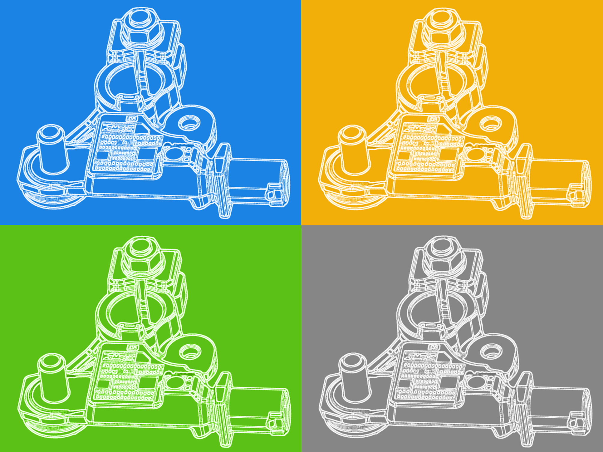

OF BEAUTY ZITAN
Kedves Látogató!
Sok szeretettel köszöntünk a, Of Beauty Zitan kennel oldalán. Ágoston Antal vagyok a feleségemmel közel 10 éve foglalkozik a Cavalier King Charles Spánielek tenyésztésével kis létszámban családias környezetben. Magyarország déli-keleti csücskében Békés megyében Nagyszénáson működünk. Kiemelt figyelmet fordítunk a korai szocializációra ezáltal biztosítjuk a kiskutyák bármilyen családba történő beilleszkedését. A nálunk született kutyák ezáltal bármilyen közösségben megállják a helyüket legyen szó kisgyermekes családokok örökös játszótársáról, akár egyedülálló emberek mindennapi társaként. Ezt segíti a fajta kiemelt alkalmazkodó képessége és emberközpontúsága. Rendkívül fontos számunkra a tőlünk származó kiskutyák megfelelő környezetbe kerüljenek. Minden kiskutyára tenyésztői garanciát adunk.
Kanjaink

Benji
- Született: 2018.01.15
- Eddigi almai nálunk: 5
- Más infók
Szukáink

Angel
- Született: 2019.05.10
- Eddigi almai nálunk: 5
- Más infók

Amarilys
- Született: 2019.05.10
- Eddigi almai nálunk: 5
- Más infók

Azzura
- Született: 2019.05.10
- Eddigi almai nálunk: 5
- Más infók

Hollie
- Született: 2019.05.10
- Eddigi almai nálunk: 5
- Más infók
Fajta bemutató
Osztályozás:
Csoport: IX. Társasági kutyák
Szekció: 7. Angol apró termetű spánielek
Besorolás (FCI szám): 136
Felépítése:
Marmagassága: 30-35 cm
Súlya: 5,4-8 kg
Színváltozatai:
- Blenheim = fehér-gesztenye színű foltokkal
- Black and Tan = fekete cser színű jegyekkel
- Ruby = gesztenyevörös
- Tricolour = fekete-fehér- cser jegyekkel
Képgaléria
Várható almok
- 2020-februárjának végén várható
- 2020-márciusának végén várható
- 2020-májusának végén várható
- 2020-augusztusának végén várható